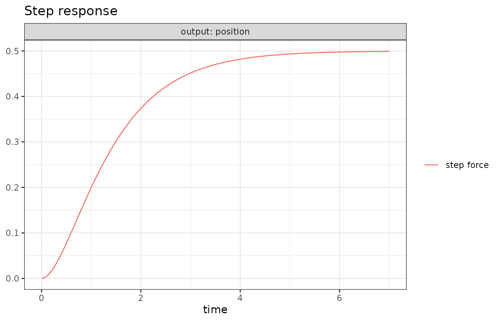
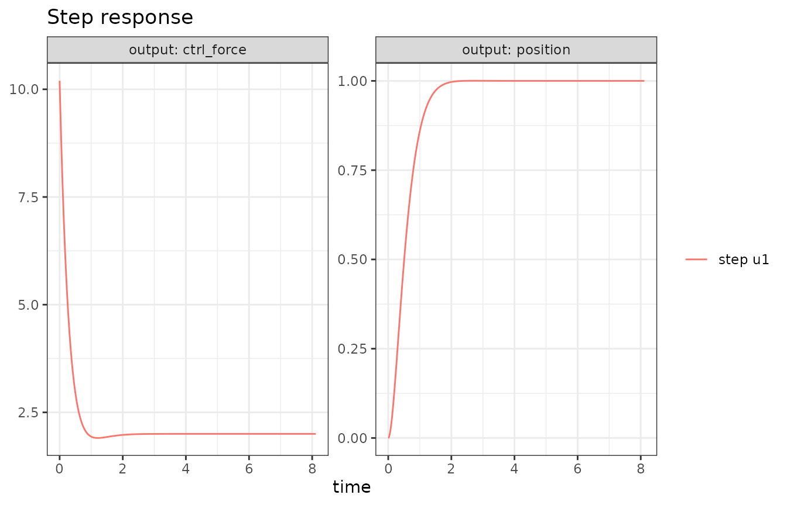
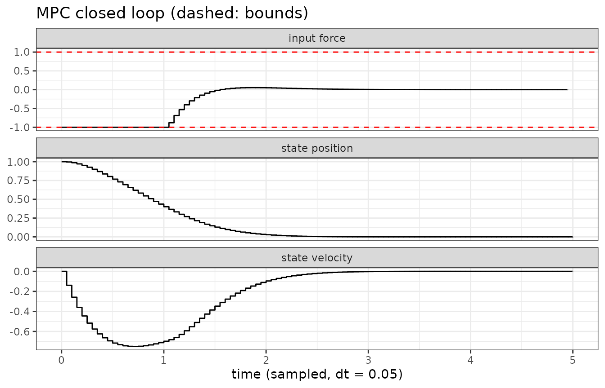
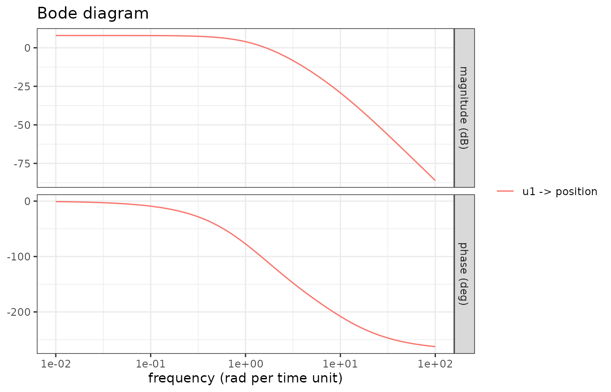

controlcompR is a framework for modeling, analyzing, designing and simulating control systems in R. It covers the path
model, analysis, design, closed loop, simulation, verification
for linear state-space and transfer-function models, classical, optimal, predictive and robust controllers, state estimation, system identification and nonlinear models. Everything runs in R; the numerical kernels are LAPACK routines (ordered real and generalized Schur decompositions, the Bartels-Stewart Sylvester solver) called from compiled C, and constrained quadratic programs are solved with OSQP.
This article walks through one complete design. The other articles treat each topic in depth.
A first model
A cart of mass 1 on a spring (stiffness 2) with damping 3 has the
state x = (position, velocity):
plant <- ctrl_ss(
A = matrix(c(0, 1, -2, -3), 2, byrow = TRUE),
B = c(0, 1),
C = c(1, 0),
state_names = c("position", "velocity"),
input_names = "force",
output_names = "position"
)
plant
#> State-space model (continuous time)
#> 2 states, 1 inputs, 1 outputs
#>
#> A =
#> position velocity
#> position 0 1
#> velocity -2 -3
#>
#> B =
#> force
#> position 0
#> velocity 1
#>
#> C =
#> position velocity
#> position 1 0
#>
#> D =
#> force
#> position 0dt = NULL (the default) means continuous time. A
positive dt creates a discrete time model with that sample
interval. The same model as a transfer function:
ctrl_ss2tf(plant)
#> Transfer function (continuous time)
#>
#> 1
#> ---------------------
#> s^2 + 3 s + 2
ctrl_poles(plant)
#> [1] -1+0i -2+0i
ctrl_stability(plant)$classification
#> [1] "asymptotically stable"Responses

ctrl_step_info(plant)
#> output case rise_time settling_time overshoot undershoot peak
#> 1 position step force 2.589619 4.606 0 0 0.4990885
#> peak_time final_value settled
#> 1 7 0.5 TRUEThe step characteristics have documented definitions (10 to 90
percent rise time, 2 percent settling band, final value from the DC gain
when the model is stable); see ?ctrl_step_info.
An optimal state-feedback design
The linear quadratic regulator minimizes \int_0^\infty x^\top Q x + u^\top R u \, dt for the law u = -Kx:
lqr <- ctrl_lqr(plant, Q = diag(c(10, 1)), R = 0.1)
lqr$K
#> position velocity
#> force 8.198039 2.94946
lqr$poles
#> [1] -2.97473+1.161473i -2.97473-1.161473ictrl_closed_loop() forms the closed loop.
ctrl_reference_gain() computes the static prefilter that
gives unit DC gain from the reference to the output, so the law becomes
u = N r - Kx:
N <- ctrl_reference_gain(plant, lqr)
cl <- ctrl_closed_loop(plant, lqr)
cl_ref <- ctrl_series(ctrl_gain(N), cl)
plot(ctrl_step(cl_ref))
The closed-loop model has the plant output and the control signal as outputs, so the plot shows the actuator effort as well as the tracking response.
Discretize and constrain: model predictive control
For digital implementation, discretize with an exact zero-order hold and design a model predictive controller with an input limit of one unit of force:
plant_d <- ctrl_c2d(plant, 0.05)
mpc <- ctrl_mpc(plant_d, horizon = 30, Q = diag(c(10, 1)), R = 0.1,
P = "lqr", u_min = -1, u_max = 1)
sim <- ctrl_simulate_mpc(mpc, x0 = c(1, 0), steps = 100)
summary(sim)
#> MPC simulation: 100 samples, 0 failed solves (0%)
#> solver statuses: solved = 100
#> solve time: mean 0.000105 s, max 0.000248 s; mean iterations 47.5
#> max input bound violation: 2.22e-16
#> max state bound violation (true plant): 0
#> max slack: 0
plot(sim)
The summary reports solver statuses, failed solves and the largest bound violation; a successful solve is not taken for granted. See the articles on model predictive control for the QP formulation, soft constraints, offset-free tracking and failure handling.
Frequency-domain checks
L <- ctrl_series(ctrl_tf(5, c(0.1, 1)), ctrl_ss2tf(plant))
ctrl_margin(L)
#> Stability margins (unity negative feedback)
#> gain margin: 7.92 (17.97 dB) at w = 5.657
#> phase margin: 73.08 deg at w = 1.63
#> delay margin: 0.7824
#> nominal closed loop stable: TRUE
plot(ctrl_bode(L))
What controlcompR does and does not claim
- LQR is optimal only for the linear model and quadratic cost it was given.
- A successful QP solve does not establish closed-loop stability of MPC.
- LQG controllers have no guaranteed robustness margins.
- A model that predicts the data well is not automatically adequate for feedback design.
- H-infinity synthesis is experimental: continuous time, D_{11} = 0, and every controller is certified by an independent norm computation.
The article Numerical validation and scope lists the conventions, the tolerances, the reference comparisons and the capability matrix with the status of every method.
Map of the articles
| Article | Topics |
|---|---|
| Models, conversions and interconnections | state space, transfer functions, zpk, c2d, feedback, connect |
| Stability, controllability and matrix equations | poles, staircase, PBH, Lyapunov, Riccati, gramians |
| Time responses | simulation, step, impulse, initial, step metrics |
| Frequency response and robustness margins | Bode, Nyquist, margins, disk margins, norms |
| PID control | filtering, anti-windup, bumpless transfer, tuning |
| State feedback | LQR, pole placement, reference tracking |
| State estimation and LQG | observers, Kalman filters, smoothers, LQG |
| Linear model predictive control | QP formulation, constraints, diagnostics |
| Advanced MPC and moving horizon estimation | rates, soft constraints, offset-free MPC, MHE |
| Robust control | H2, H-infinity, mixed sensitivity, small gain |
| System identification | ARX, subspace, validation, residual tests |
| Nonlinear systems | simulation, linearization, EKF, UKF, NMPC |
| Model reduction | Hankel singular values, balanced truncation |
| Numerical validation and scope | conventions, tests, capability matrix |